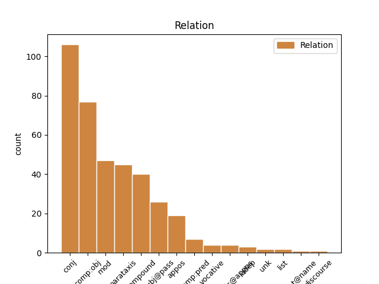
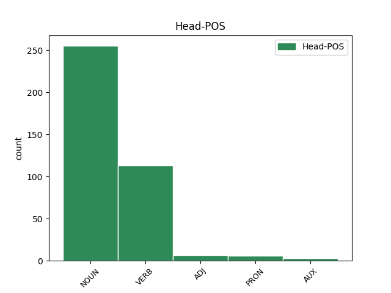
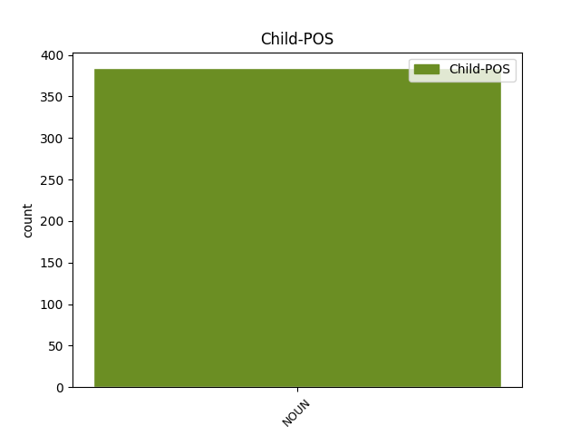

Distribution of features within this leaf



Agreement Rules sorted by frequency.
- When the dependent token is the conjunct(conj) of the head token, and the dependent token is NOUN.
1 @user1 _ _ _ _ 0 _ _ _
2 ahahaah _ _ _ _ 0 _ _ _
3 non _ _ _ _ 0 _ _ _
4 ci _ _ _ _ 0 _ _ _
5 avevo _ _ _ _ 0 _ _ _
6 fatto _ _ _ _ 0 _ _ _
7 caso _ _ _ _ 0 _ _ _
8 !!! _ _ _ _ 0 _ _ _
9 #labuonascuola _ _ _ _ 0 _ _ _
10 per _ _ _ _ 0 _ _ _
11 @user2 _ _ _ _ 0 _ _ _
12 @user3 _ _ _ _ 0 _ _ _
13 serve _ _ _ _ 0 _ _ _
14 #Sgarbi _ _ _ _ 0 _ _ _
15 capra _ _ _ _ 0 _ _ _
16 capra capra NOUN S Gender=Fem|Number=Sing 0 _ _ _
17 capra capra NOUN S Gender=Fem|Number=Sing 16 conj _ SpaceAfter=No
18 !! _ _ _ _ 0 _ _ _
19 :)) _ _ _ _ 0 _ _ _
1 Non _ _ _ _ 0 _ _ _
2 ho _ _ _ _ 0 _ _ _
3 neanche _ _ _ _ 0 _ _ _
4 guardato guardato VERB V Gender=Masc|Number=Sing|Tense=Past|VerbForm=Part 0 _ _ _
5 il _ _ _ _ 0 _ _ _
6 " _ _ _ _ 0 _ _ _
7 patt patto NOUN S Gender=Masc 4 comp:obj _ _
8 ( _ _ _ _ 0 _ _ _
9 cc _ _ _ _ 0 _ _ _
10 ) _ _ _ _ 0 _ _ _
11 o _ _ _ _ 0 _ _ _
12 educativo _ _ _ _ 0 _ _ _
13 " _ _ _ _ 0 _ _ _
14 , _ _ _ _ 0 _ _ _
15 tanto _ _ _ _ 0 _ _ _
16 so _ _ _ _ 0 _ _ _
17 che _ _ _ _ 0 _ _ _
18 non _ _ _ _ 0 _ _ _
19 avrò _ _ _ _ 0 _ _ _
20 i _ _ _ _ 0 _ _ _
21 requisiti _ _ _ _ 0 _ _ _
22 per _ _ _ _ 0 _ _ _
23 essere _ _ _ _ 0 _ _ _
24 meritevole _ _ _ _ 0 _ _ _
25 : _ _ _ _ 0 _ _ _
26 la _ _ _ _ 0 _ _ _
27 buona _ _ _ _ 0 _ _ _
28 scuola _ _ _ _ 0 _ _ _
29 è _ _ _ _ 0 _ _ _
30 " _ _ _ _ 0 _ _ _
31 altrove _ _ _ _ 0 _ _ _
32 " _ _ _ _ 0 _ _ _
33 !!! _ _ _ _ 0 _ _ _
1 @user _ _ _ _ 0 _ _ _
2 Altro _ _ _ _ 0 _ _ _
3 che _ _ _ _ 0 _ _ _
4 buona _ _ _ _ 0 _ _ _
5 scuola _ _ _ _ 0 _ _ _
6 . _ _ _ _ 0 _ _ _
7 A _ _ _ _ 0 _ _ _
8 Campobasso _ _ _ _ 0 _ _ _
9 siamo _ _ _ _ 0 _ _ _
10 ancora _ _ _ _ 0 _ _ _
11 in _ _ _ _ 0 _ _ _
12 attesa _ _ _ _ 0 _ _ _
13 di _ _ _ _ 0 _ _ _
14 il _ _ _ _ 0 _ _ _
15 Capo capo NOUN S Gender=Masc|Number=Sing 0 _ _ _
16 Dipartimento dipartimento NOUN S Gender=Masc|Number=Sing 15 compound _ SpaceAfter=No
17 . _ _ _ _ 0 _ _ _
1 Terrorismo _ _ _ _ 0 _ _ _
2 , _ _ _ _ 0 _ _ _
3 studente studente NOUN S Gender=Masc|Number=Sing 5 subj@pass _ _
4 universitario _ _ _ _ 0 _ _ _
5 espulso espellere VERB V Gender=Masc|Number=Sing|Tense=Past|VerbForm=Part 0 _ _ _
6 da _ _ _ _ 0 _ _ _
7 l' _ _ _ _ 0 _ _ _
8 Italia _ _ _ _ 0 _ _ _
9 . _ _ _ _ 0 _ _ _
10 Ma _ _ _ _ 0 _ _ _
11 sarebbe _ _ _ _ 0 _ _ _
12 bastato _ _ _ _ 0 _ _ _
13 aspettare _ _ _ _ 0 _ _ _
14 che _ _ _ _ 0 _ _ _
15 si _ _ _ _ 0 _ _ _
16 laureasse _ _ _ _ 0 _ _ _
17 . _ _ _ _ 0 _ _ _
18 [ _ _ _ _ 0 _ _ _
19 @user _ _ _ _ 0 _ _ _
20 ] _ _ _ _ 0 _ _ _
1 Governo governo NOUN S Gender=Masc|Number=Sing 0 _ _ _
2 Monti _ _ _ _ 0 _ _ _
3 , _ _ _ _ 0 _ _ _
4 Alenia _ _ _ _ 0 _ _ _
5 : _ _ _ _ 0 _ _ _
6 piano piano NOUN S Gender=Masc|Number=Sing 1 parataxis _ _
7 di _ _ _ _ 0 _ _ _
8 rilancio _ _ _ _ 0 _ _ _
9 colpito _ _ _ _ 0 _ _ _
10 e _ _ _ _ 0 _ _ _
11 affondato _ _ _ _ 0 _ _ _
12 http://t.co/f27VgQVS _ _ _ _ 0 _ _ _
1 @user1 _ _ _ _ 0 _ _ _
2 unica _ _ _ _ 0 _ _ _
3 #labuonascuola _ _ _ _ 0 _ _ _
4 e' _ _ _ _ 0 _ _ _
5 scuola _ _ _ _ 0 _ _ _
6 di _ _ _ _ 0 _ _ _
7 la _ _ _ _ 0 _ _ _
8 #vanga _ _ _ _ 0 _ _ _
9 solo _ _ _ _ 0 _ _ _
10 riutilizzo riutilizzo NOUN S Gender=Masc|Number=Sing 0 _ _ _
11 campi campo NOUN S Gender=Masc|Number=Plur 10 mod _ _
12 incolti _ _ _ _ 0 _ _ _
13 rimedio _ _ _ _ 0 _ _ _
14 disoccupazione _ _ _ _ 0 _ _ _
15 di _ _ _ _ 0 _ _ _
16 massa _ _ _ _ 0 _ _ _
17 @user2 _ _ _ _ 0 _ _ _
1 Non _ _ _ _ 0 _ _ _
2 è _ _ _ _ 0 _ _ _
3 la _ _ _ _ 0 _ _ _
4 buona _ _ _ _ 0 _ _ _
5 scuola _ _ _ _ 0 _ _ _
6 ma _ _ _ _ 0 _ _ _
7 solo _ _ _ _ 0 _ _ _
8 la _ _ _ _ 0 _ _ _
9 buona _ _ _ _ 0 _ _ _
10 novella _ _ _ _ 0 _ _ _
11 . _ _ _ _ 0 _ _ _
12 Il _ _ _ _ 0 _ _ _
13 governo governo NOUN S Gender=Masc|Number=Sing 0 _ _ _
14 Renzi _ _ _ _ 0 _ _ _
15 il _ _ _ _ 0 _ _ _
16 Governo governo NOUN S Gender=Masc|Number=Sing 13 appos _ _
17 di _ _ _ _ 0 _ _ _
18 la _ _ _ _ 0 _ _ _
19 ruita _ _ _ _ 0 _ _ _
20 di _ _ _ _ 0 _ _ _
21 la _ _ _ _ 0 _ _ _
22 fortuna _ _ _ _ 0 _ _ _
23 . _ _ _ _ 0 _ _ _
1 #tfaordinario _ _ _ _ 0 _ _ _
2 è _ _ _ _ 0 _ _ _
3 stato essere AUX V Gender=Masc|Number=Sing|Tense=Past|VerbForm=Part 0 _ _ _
4 il _ _ _ _ 0 _ _ _
5 fondo fondo NOUN S Gender=Masc|Number=Sing 3 comp:pred _ _
6 cassa _ _ _ _ 0 _ _ _
7 per _ _ _ _ 0 _ _ _
8 la _ _ _ _ 0 _ _ _
9 riforma _ _ _ _ 0 _ _ _
10 di _ _ _ _ 0 _ _ _
11 la _ _ _ _ 0 _ _ _
12 #labuonascuola _ _ _ _ 0 _ _ _
13 di _ _ _ _ 0 _ _ _
14 @user _ _ _ _ 0 _ _ _
15 . _ _ _ _ 0 _ _ _
16 Beneficienza _ _ _ _ 0 _ _ _
17 la _ _ _ _ 0 _ _ _
18 faccio _ _ _ _ 0 _ _ _
19 quando _ _ _ _ 0 _ _ _
20 dico _ _ _ _ 0 _ _ _
21 io _ _ _ _ 0 _ _ _
22 !!!! _ _ _ _ 0 _ _ _
1 Governo governo NOUN S Gender=Masc|Number=Sing 0 _ _ _
2 Monti _ _ _ _ 0 _ _ _
3 : _ _ _ _ 0 _ _ _
4 Golpe golpe NOUN S Gender=Masc 1 parataxis@appos _ SpaceAfter=No
5 ? _ _ _ _ 0 _ _ _
6 Alieni _ _ _ _ 0 _ _ _
7 ? _ _ _ _ 0 _ _ _
8 Massoni _ _ _ _ 0 _ _ _
9 ? _ _ _ _ 0 _ _ _
10 : _ _ _ _ 0 _ _ _
11 Il _ _ _ _ 0 _ _ _
12 Tg1 _ _ _ _ 0 _ _ _
13 è _ _ _ _ 0 _ _ _
14 attonito _ _ _ _ 0 _ _ _
15 : _ _ _ _ 0 _ _ _
16 ma _ _ _ _ 0 _ _ _
17 chi _ _ _ _ 0 _ _ _
18 sono _ _ _ _ 0 _ _ _
19 questi _ _ _ _ 0 _ _ _
20 ? _ _ _ _ 0 _ _ _
21 Perché _ _ _ _ 0 _ _ _
22 fra _ _ _ _ 0 _ _ _
23 le _ _ _ _ 0 _ _ _
24 donne _ _ _ _ 0 _ _ _
25 non _ _ _ _ 0 _ _ _
26 ce _ _ _ _ 0 _ _ _
27 n' _ _ _ _ 0 _ _ _
28 è _ _ _ _ 0 _ _ _
29 ne... _ _ _ _ 0 _ _ _
30 http://t.co/0lVOZdTc _ _ _ _ 0 _ _ _
1 Governo _ _ _ _ 0 _ _ _
2 Monti _ _ _ _ 0 _ _ _
3 : _ _ _ _ 0 _ _ _
4 aspetta _ _ _ _ 0 _ _ _
5 e _ _ _ _ 0 _ _ _
6 spread _ _ _ _ 0 _ _ _
7 il _ _ _ _ 0 _ _ _
8 titolo _ _ _ _ 0 _ _ _
9 di _ _ _ _ 0 _ _ _
10 oggi _ _ _ _ 0 _ _ _
11 di _ _ _ _ 0 _ _ _
12 #agorarai _ _ _ _ 0 _ _ _
13 ci _ _ _ _ 0 _ _ _
14 piace _ _ _ _ 0 _ _ _
15 , _ _ _ _ 0 _ _ _
16 tipo tipo NOUN S Gender=Masc|Number=Sing 0 _ _ _
17 scarrafone scarrafone NOUN S Gender=Masc|Number=Sing 16 unk _ _
18 ecc _ _ _ _ 0 _ _ _
19 . _ _ _ _ 0 _ _ _
20 ecc _ _ _ _ 0 _ _ _
21 . _ _ _ _ 0 _ _ _
1 Voi _ _ _ _ 0 _ _ _
2 siete _ _ _ _ 0 _ _ _
3 il _ _ _ _ 0 _ _ _
4 buono _ _ _ _ 0 _ _ _
5 di _ _ _ _ 0 _ _ _
6 la _ _ _ _ 0 _ _ _
7 scuola _ _ _ _ 0 _ _ _
8 : _ _ _ _ 0 _ _ _
9 fate _ _ _ _ 0 _ _ _
10 lo _ _ _ _ 0 _ _ _
11 capire _ _ _ _ 0 _ _ _
12 a _ _ _ _ 0 _ _ _
13 i _ _ _ _ 0 _ _ _
14 teorici _ _ _ _ 0 _ _ _
15 di _ _ _ _ 0 _ _ _
16 la _ _ _ _ 0 _ _ _
17 " _ _ _ _ 0 _ _ _
18 buona _ _ _ _ 0 _ _ _
19 scuola _ _ _ _ 0 _ _ _
20 " _ _ _ _ 0 _ _ _
21 . _ _ _ _ 0 _ _ _
22 Buon _ _ _ _ 0 _ _ _
23 inizio inizio NOUN S Gender=Masc|Number=Sing 0 _ _ _
24 ragazzi ragazzo NOUN S Gender=Masc|Number=Plur 23 vocative _ SpaceAfter=No
25 . _ _ _ _ 0 _ _ _
26 #primogiornodiscuola _ _ _ _ 0 _ _ _
27 ( _ _ _ _ 0 _ _ _
28 cit. _ _ _ _ 0 _ _ _
29 ) _ _ _ _ 0 _ _ _
1 Terrorismo terrorismo NOUN S Gender=Masc|Number=Sing 5 udep _ SpaceAfter=No
2 , _ _ _ _ 0 _ _ _
3 studente _ _ _ _ 0 _ _ _
4 universitario _ _ _ _ 0 _ _ _
5 espulso espellere VERB V Gender=Masc|Number=Sing|Tense=Past|VerbForm=Part 0 _ _ _
6 da _ _ _ _ 0 _ _ _
7 l' _ _ _ _ 0 _ _ _
8 Italia _ _ _ _ 0 _ _ _
9 . _ _ _ _ 0 _ _ _
10 Ma _ _ _ _ 0 _ _ _
11 sarebbe _ _ _ _ 0 _ _ _
12 bastato _ _ _ _ 0 _ _ _
13 aspettare _ _ _ _ 0 _ _ _
14 che _ _ _ _ 0 _ _ _
15 si _ _ _ _ 0 _ _ _
16 laureasse _ _ _ _ 0 _ _ _
17 . _ _ _ _ 0 _ _ _
18 [ _ _ _ _ 0 _ _ _
19 @user _ _ _ _ 0 _ _ _
20 ] _ _ _ _ 0 _ _ _
1 RT _ _ _ _ 0 _ _ _
2 @user _ _ _ _ 0 _ _ _
3 : _ _ _ _ 0 _ _ _
4 Facebook _ _ _ _ 0 _ _ _
5 , _ _ _ _ 0 _ _ _
6 ci _ _ _ _ 0 _ _ _
7 sono _ _ _ _ 0 _ _ _
8 3 _ _ _ _ 0 _ _ _
9 tipi _ _ _ _ 0 _ _ _
10 di _ _ _ _ 0 _ _ _
11 foto _ _ _ _ 0 _ _ _
12 profilo _ _ _ _ 0 _ _ _
13 : _ _ _ _ 0 _ _ _
14 1 _ _ _ _ 0 _ _ _
15 ) _ _ _ _ 0 _ _ _
16 tette tetta NOUN S Gender=Fem|Number=Plur 0 _ _ _
17 - _ _ _ _ 0 _ _ _
18 culo _ _ _ _ 0 _ _ _
19 . _ _ _ _ 0 _ _ _
20 2 _ _ _ _ 0 _ _ _
21 ) _ _ _ _ 0 _ _ _
22 riga _ _ _ _ 0 _ _ _
23 laterale _ _ _ _ 0 _ _ _
24 tattica _ _ _ _ 0 _ _ _
25 che _ _ _ _ 0 _ _ _
26 copre _ _ _ _ 0 _ _ _
27 tutta _ _ _ _ 0 _ _ _
28 la _ _ _ _ 0 _ _ _
29 faccia _ _ _ _ 0 _ _ _
30 3) _ _ _ _ 0 _ _ _
31 foto foto NOUN S Gender=Fem 16 list _ _
32 occhio _ _ _ _ 0 _ _ _
33 ( _ _ _ _ 0 _ _ _
34 ri… _ _ _ _ 0 _ _ _
1 Il _ _ _ _ 0 _ _ _
2 ministro _ _ _ _ 0 _ _ _
3 #Giannini _ _ _ _ 0 _ _ _
4 augura _ _ _ _ 0 _ _ _
5 buon _ _ _ _ 0 _ _ _
6 primo _ _ _ _ 0 _ _ _
7 giorno _ _ _ _ 0 _ _ _
8 di _ _ _ _ 0 _ _ _
9 scuola _ _ _ _ 0 _ _ _
10 con _ _ _ _ 0 _ _ _
11 un _ _ _ _ 0 _ _ _
12 tweet _ _ _ _ 0 _ _ _
13 : _ _ _ _ 0 _ _ _
14 “ _ _ _ _ 0 _ _ _
15 Vi _ _ _ _ 0 _ _ _
16 vedo _ _ _ _ 0 _ _ _
17 , _ _ _ _ 0 _ _ _
18 spegnete _ _ _ _ 0 _ _ _
19 quei _ _ _ _ 0 _ _ _
20 cazzo cazzo NOUN S Gender=Masc|Number=Sing 22 discourse _ _
21 di _ _ _ _ 0 _ _ _
22 telefoni telefono NOUN S Gender=Masc|Number=Plur 0 _ _ _
23 ” _ _ _ _ 0 _ _ _
24 . _ _ _ _ 0 _ _ _
25 #labuonascuola _ _ _ _ 0 _ _ _
Disagree Examples:
1 Ragazzi _ _ _ _ 0 _ _ _
2 a _ _ _ _ 0 _ _ _
3 Roma _ _ _ _ 0 _ _ _
4 c' _ _ _ _ 0 _ _ _
5 è _ _ _ _ 0 _ _ _
6 un _ _ _ _ 0 _ _ _
7 tempo _ _ _ _ 0 _ _ _
8 pessimo _ _ _ _ 0 _ _ _
9 . _ _ _ _ 0 _ _ _
10 Piove _ _ _ _ 0 _ _ _
11 ma _ _ _ _ 0 _ _ _
12 come _ _ _ _ 0 _ _ _
13 piove _ _ _ _ 0 _ _ _
14 . _ _ _ _ 0 _ _ _
15 Il _ _ _ _ 0 _ _ _
16 clima _ _ _ _ 0 _ _ _
17 è _ _ _ _ 0 _ _ _
18 in _ _ _ _ 0 _ _ _
19 linea _ _ _ _ 0 _ _ _
20 con _ _ _ _ 0 _ _ _
21 il _ _ _ _ 0 _ _ _
22 governo _ _ _ _ 0 _ _ _
23 Monti _ _ _ _ 0 _ _ _
24 . _ _ _ _ 0 _ _ _
25 Lacrime lacrima NOUN S Gender=Fem|Number=Plur 0 _ _ _
26 sudore sudore NOUN S Gender=Masc|Number=Sing 25 conj _ _
27 sangue _ _ _ _ 0 _ _ _
28 e _ _ _ _ 0 _ _ _
29 pure _ _ _ _ 0 _ _ _
30 pioggia _ _ _ _ 0 _ _ _
1 Ragazzi _ _ _ _ 0 _ _ _
2 a _ _ _ _ 0 _ _ _
3 Roma _ _ _ _ 0 _ _ _
4 c' _ _ _ _ 0 _ _ _
5 è _ _ _ _ 0 _ _ _
6 un _ _ _ _ 0 _ _ _
7 tempo _ _ _ _ 0 _ _ _
8 pessimo _ _ _ _ 0 _ _ _
9 . _ _ _ _ 0 _ _ _
10 Piove _ _ _ _ 0 _ _ _
11 ma _ _ _ _ 0 _ _ _
12 come _ _ _ _ 0 _ _ _
13 piove _ _ _ _ 0 _ _ _
14 . _ _ _ _ 0 _ _ _
15 Il _ _ _ _ 0 _ _ _
16 clima _ _ _ _ 0 _ _ _
17 è _ _ _ _ 0 _ _ _
18 in _ _ _ _ 0 _ _ _
19 linea _ _ _ _ 0 _ _ _
20 con _ _ _ _ 0 _ _ _
21 il _ _ _ _ 0 _ _ _
22 governo _ _ _ _ 0 _ _ _
23 Monti _ _ _ _ 0 _ _ _
24 . _ _ _ _ 0 _ _ _
25 Lacrime _ _ _ _ 0 _ _ _
26 sudore _ _ _ _ 0 _ _ _
27 sangue sangue NOUN S Gender=Masc|Number=Sing 0 _ _ _
28 e _ _ _ _ 0 _ _ _
29 pure _ _ _ _ 0 _ _ _
30 pioggia pioggia NOUN S Gender=Fem|Number=Sing 27 conj _ _
1 : _ _ _ _ 0 _ _ _
2 abbiamo _ _ _ _ 0 _ _ _
3 voluto volere VERB V Gender=Masc|Number=Sing|Tense=Past|VerbForm=Part 0 _ _ _
4 la _ _ _ _ 0 _ _ _
5 bicicletta bicicletta NOUN S Gender=Fem|Number=Sing 3 comp:obj _ _
6 ( _ _ _ _ 0 _ _ _
7 il _ _ _ _ 0 _ _ _
8 Governo _ _ _ _ 0 _ _ _
9 Monti _ _ _ _ 0 _ _ _
10 ) _ _ _ _ 0 _ _ _
11 , _ _ _ _ 0 _ _ _
12 ed _ _ _ _ 0 _ _ _
13 ora _ _ _ _ 0 _ _ _
14 si _ _ _ _ 0 _ _ _
15 deve _ _ _ _ 0 _ _ _
16 pedalare _ _ _ _ 0 _ _ _
17 ... _ _ _ _ 0 _ _ _
1 : _ _ _ _ 0 _ _ _
2 abbiamo _ _ _ _ 0 _ _ _
3 voluto _ _ _ _ 0 _ _ _
4 la _ _ _ _ 0 _ _ _
5 bicicletta bicicletta NOUN S Gender=Fem|Number=Sing 0 _ _ _
6 ( _ _ _ _ 0 _ _ _
7 il _ _ _ _ 0 _ _ _
8 Governo governo NOUN S Gender=Masc|Number=Sing 5 appos _ _
9 Monti _ _ _ _ 0 _ _ _
10 ) _ _ _ _ 0 _ _ _
11 , _ _ _ _ 0 _ _ _
12 ed _ _ _ _ 0 _ _ _
13 ora _ _ _ _ 0 _ _ _
14 si _ _ _ _ 0 _ _ _
15 deve _ _ _ _ 0 _ _ _
16 pedalare _ _ _ _ 0 _ _ _
17 ... _ _ _ _ 0 _ _ _
1 RT _ _ _ _ 0 _ _ _
2 @user _ _ _ _ 0 _ _ _
3 : _ _ _ _ 0 _ _ _
4 ' _ _ _ _ 0 _ _ _
5 tipi tipo NOUN S Gender=Masc|Number=Plur 0 _ _ _
6 di _ _ _ _ 0 _ _ _
7 persone _ _ _ _ 0 _ _ _
8 su _ _ _ _ 0 _ _ _
9 twitter _ _ _ _ 0 _ _ _
10 ' _ _ _ _ 0 _ _ _
11 LA _ _ _ _ 0 _ _ _
12 ' _ _ _ _ 0 _ _ _
13 STUDIOSA studioso NOUN S Gender=Fem|Number=Sing 5 appos _ _
14 ' _ _ _ _ 0 _ _ _
15 . _ _ _ _ 0 _ _ _
16 Sta _ _ _ _ 0 _ _ _
17 su _ _ _ _ 0 _ _ _
18 twitter _ _ _ _ 0 _ _ _
19 a _ _ _ _ 0 _ _ _
20 dire _ _ _ _ 0 _ _ _
21 che _ _ _ _ 0 _ _ _
22 dovrebbe _ _ _ _ 0 _ _ _
23 studiare _ _ _ _ 0 _ _ _
24 invece _ _ _ _ 0 _ _ _
25 di _ _ _ _ 0 _ _ _
26 andare _ _ _ _ 0 _ _ _
27 a _ _ _ _ 0 _ _ _
28 far _ _ _ _ 0 _ _ _
29 lo _ _ _ _ 0 _ _ _
30 . _ _ _ _ 0 _ _ _
31 http://t _ _ _ _ 0 _ _ _
32 .… _ _ _ _ 0 _ _ _